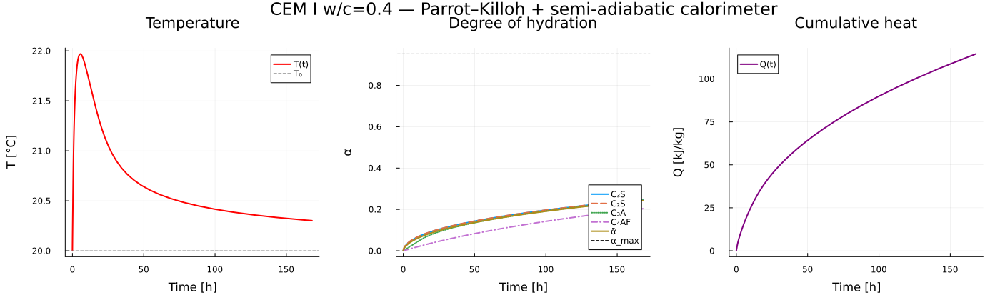

Cement clinker hydration kinetics
This example demonstrates the full kinetics workflow: from database loading to ODE integration and calorimetric post-processing. It models the hydration of an OPC (CEM I 52.5 R) clinker using the Parrot–Killoh (Parrott and Killoh, 1984) rate model with Arrhenius temperature correction (Schindler and Folliard, 2005), coupled to a semi-adiabatic calorimeter (Lavergne et al., 2018).
1. Chemical system
We select the four clinker phases as kinetic species, plus the main hydration products and water. CEMDATA_PRIMARIES provides the independent aqueous components.
using ChemistryLab
using OrdinaryDiffEq
using DynamicQuantities
using OrderedCollections
DATA_FILE = datapath("cemdata18-thermofun.json")
substances = build_species(DATA_FILE)
input_species = split(
"C3S C2S C3A C4AF " *
"Portlandite Jennite ettringite monosulphate12 C3AH6 C3FH6 " *
"H2O@",
)
species = speciation(substances, input_species; aggregate_state = [AS_AQUEOUS])
cs = ChemicalSystem(species, CEMDATA_PRIMARIES)
println("Chemical system: $(length(cs.species)) species")┌───────────────────────────────────────────────────┐
│ Loading database: data/cemdata18-thermofun.json │
└───────────────────────────────────────────────────┘
┌────────────────────┐
│ Building species │
└────────────────────┘
Progress: 51%|█████████████████████████████████████████████████████████████████████████████████▉ | ETA: 0:00:00
Progress: 100%|█████████████████████████████████████████████████████████████████████████████████████████████████████████████████████████████████████████████████████████████████| Time: 0:00:00
Chemical system: 51 species2. Initial state
Typical CEM I 52.5 R composition from (Lavergne et al., 2018). We work with 1 kg of cement at water/cement ratio $w/c = 0.4$.
const WC = 0.4
const COMPOSITION = (C3S = 0.619, C2S = 0.165, C3A = 0.08, C4AF = 0.087)
state0 = ChemicalState(cs)
for (name, frac) in pairs(COMPOSITION)
set_quantity!(state0, string(name), frac * u"kg")
end
set_quantity!(state0, "H2O@", WC * u"kg")3. Parrot–Killoh kinetic models
Maximum degree of hydration from the (Powers, 1948) law: $\alpha_{\max} \leq w/c \,/\, 0.42$.
const α_max = min(1.0, WC / 0.42)
pk_C3S = parrot_killoh(PK_PARAMS_C3S, "C3S"; α_max)
pk_C2S = parrot_killoh(PK_PARAMS_C2S, "C2S"; α_max)
pk_C3A = parrot_killoh(PK_PARAMS_C3A, "C3A"; α_max)
pk_C4AF = parrot_killoh(PK_PARAMS_C4AF, "C4AF"; α_max)4. Balanced hydration reactions
Reactions must be mass-balanced so that $\Delta_r H^0$ can be computed automatically from species $\Delta_a H^0$. The Jennite formula unit in CEMDATA18 is $(\text{SiO}_2)(\text{CaO})_{5/3}(\text{H}_2\text{O})_{21/10}$.
sp(name) = cs[name]
rxn_C3S = Reaction(
OrderedDict(sp("C3S") => 1.0, sp("H2O@") => 103/30),
OrderedDict(sp("Jennite") => 1.0, sp("Portlandite") => 4/3);
symbol = "C₃S hydration",
)
rxn_C3S[:rate] = pk_C3S
rxn_C2S = Reaction(
OrderedDict(sp("C2S") => 1.0, sp("H2O@") => 73/30),
OrderedDict(sp("Jennite") => 1.0, sp("Portlandite") => 1/3);
symbol = "C₂S hydration",
)
rxn_C2S[:rate] = pk_C2S
rxn_C3A = Reaction(
OrderedDict(sp("C3A") => 1.0, sp("H2O@") => 6.0),
OrderedDict(sp("C3AH6") => 1.0);
symbol = "C₃A hydration",
)
rxn_C3A[:rate] = pk_C3A
rxn_C4AF = Reaction(
OrderedDict(sp("C4AF") => 1.0, sp("Portlandite") => 2.0, sp("H2O@") => 10.0),
OrderedDict(sp("C3AH6") => 1.0, sp("C3FH6") => 1.0);
symbol = "C₄AF hydration",
)
rxn_C4AF[:rate] = pk_C4AF
kinetic_reactions = [rxn_C3S, rxn_C2S, rxn_C3A, rxn_C4AF]5. Kinetics problem and calorimeter
The semi-adiabatic calorimeter (Lavergne et al., 2018) solves
\[\frac{dT}{dt} = \frac{\dot{q}(t) - \varphi(\Delta T)}{C_p^{\text{total}}}\]
where $\varphi(\Delta T) = a \, \Delta T + b \, \Delta T^2$ models quadratic heat losses and $C_p^{\text{total}} = C_p + \sum_i n_i C_{p,i}^0(T)$.
cal = SemiAdiabaticCalorimeter(;
Cp = (1.0 * 800.0 + WC * 4186.0 + 1.0 * 900.0) * u"J/K",
T_env = 293.15u"K",
heat_loss = ΔT -> 0.3 * ΔT + 0.003 * ΔT^2,
T0 = 293.15u"K",
)
kp = KineticsProblem(
cs, kinetic_reactions, state0, (0.0, 7.0 * 86400.0);
calorimeter = cal,
equilibrium_solver = nothing,
)5 bis. The hydrating paste, with the assemblage computed instead of imposed
Everything above imposes the hydrate assemblage: four reactions, written by hand, each with fixed coefficients. The alternative is the partitioned coupling of (Leal et al., 2017) — the one Reaktoro implements — in which thermodynamics decides the products. It needs less input, not more: the kinetic_species API derives the dissolution reactions itself, so the four Reaction blocks disappear.
How the two halves are joined
Species split into a kinetic partition — the clinker phases, carrying Parrot–Killoh rates — and an equilibrium partition: the pore solution and every hydrate free to precipitate. The ODE advances
\[\frac{\mathrm{d} n_k}{\mathrm{d} t} = \nu_k^{\mathsf T} r , \qquad \frac{\mathrm{d} b_e}{\mathrm{d} t} = A_e\,\nu_e^{\mathsf T} r ,\]
carrying the element amounts of the equilibrium partition, and the pore solution and hydrates are recovered at each accepted step by
\[n_e = \varphi(b_e) = \arg\min_n G(n) \quad\text{s.t.}\quad A_e n = b_e,\; n \ge 0 .\]
Integrating bₑ rather than nₑ is what makes this robust: during hydration an individual species may want to go negative — the generated dissolution reactions are written in H⁺, and a cement paste contains no acid — and it is the minimizer, not the caller, that redistributes the elements over a feasible set.
Running it
Everything above imposes the hydrate assemblage: four reactions, written by hand, each with fixed coefficients. The alternative is to let thermodynamics decide, and it needs less input, not more — the kinetic_species API derives the dissolution reactions itself, so the four Reaction blocks disappear.
using Optimization, OptimizationIpopt # or: using OptimaSolver
cs_eq = ChemicalSystem(
species, CEMDATA_PRIMARIES;
kinetic_species = Dict(
"C3S" => pk_C3S, "C2S" => pk_C2S, "C3A" => pk_C3A, "C4AF" => pk_C4AF,
),
)
state_eq = ChemicalState(cs_eq)
for (name, frac) in pairs(COMPOSITION)
set_quantity!(state_eq, string(name), frac * u"kg")
end
set_quantity!(state_eq, "H2O@", WC * u"kg")
es = EquilibriumSolver(cs_eq, DiluteSolutionModel(), IpoptOptimizer())
kp_eq = KineticsProblem(cs_eq, state_eq, (0.0, 7.0 * 86400.0);
calorimeter = cal, equilibrium_solver = es)
sol_eq = integrate(kp_eq, KineticsSolver(; ode_solver = Rodas5P(),
reltol = 1e-6, abstol = 1e-9))Two things are worth watching in that run.
The clinker curves do not move. parrot_killoh ignores its lna argument and heat_rate uses only the reaction enthalpies, so α(t), the temperature and the cumulative heat are the same to solver tolerance. Re-speciation cannot change them, and a comparison that reported otherwise would be reporting a bug.
The products do move, and that is the point. With the reactions written by hand, the ratio of portlandite to C-S-H is whatever the coefficients say. With the solver, the dissolved calcium, silicon, aluminum and sulfur are distributed by Gibbs minimization over every phase declared in the system, so the assemblage — and the pore-solution pH that comes with it — is an output. That is what makes the model usable outside the composition its stoichiometry was fitted for: a supplementary cementitious material, a carbonating cover, a leached surface.
One equilibrium solve per accepted ODE step, not per right-hand-side evaluation — see the coupling note in the kinetics manual. On this system that is a few hundred solves over seven days of hydration.
It costs nothing on α(t) or on the calorimetry: the (Parrott and Killoh, 1984) rate closure ignores its lna argument and heat_rate uses only the reaction enthalpies, so re-speciation cannot move either curve.
What it does cost is the product assemblage. With the solver off, the hydrates are whatever the four reactions written above say they are — Jennite, portlandite, C₃AH₆ and C₃FH₆ in fixed proportions, chosen by hand. With a solver, the same dissolved elements are distributed by Gibbs minimization over every phase in the system, so which hydrates appear, and in what amounts, becomes a result instead of an input. That is the whole difference between a stoichiometric model and a thermodynamic one, and it is what matters as soon as the composition leaves the range the stoichiometry was fitted for — a supplementary cementitious material, carbonation, leaching.
To switch it on, build a solver over the same system and hand it over:
using Optimization, OptimizationIpopt # or: using OptimaSolver
es = EquilibriumSolver(cs, DiluteSolutionModel(), IpoptOptimizer())
kp = KineticsProblem(cs, kinetic_reactions, state0, tspan;
calorimeter = cal, equilibrium_solver = es)The hydrates then no longer need to appear as reaction products at all: the kinetic_species API generates the dissolution reactions on its own, and equilibrium decides the rest.
On the C₃S/C₂S sub-system, seven days at w/c = 0.4, that run gives
α(C₃S) = 0.277 α(C₂S) = 0.279 (unchanged, as expected)
Jennite 1.02 mol Portlandite 1.09 mol
H₂O 18.97 mol (from 22.20 — consumed by hydration)
Ca²⁺ 3.5 mmol OH⁻ 8.5 mmol
‖Aₑnₑ − bₑ‖∞ = 8.7e-8 89 steps, no failed equilibriumPortlandite and C-S-H in comparable amounts, water consumed, an alkaline pore solution at millimolar calcium — none of which was put in by hand.
6. Integration
ks = KineticsSolver(; ode_solver = Rodas5P(), reltol = 1e-6, abstol = 1e-9)
sol = integrate(kp, ks)
println("$(length(sol.t)) accepted steps over 7 days")┌ Warning: Using arrays or dicts to store parameters of different types can hurt performance.
│ Consider using tuples instead.
└ @ SciMLBase ~/.julia/packages/SciMLBase/y52JD/src/performance_warnings.jl:33
94 accepted steps over 7 days7. Post-processing
using Printf
t_h = sol.t ./ 3600.0
t_T, T_K_vec = temperature_profile(sol, cal)
t_Q, Q_J_vec = cumulative_heat(sol, cal)
T_°C = T_K_vec .- 273.15
Q_kJ = Q_J_vec ./ 1000.0
n0_kin = [sol.prob.p.n_initial_full[i] for i in kp.idx_kinetic]
n_kin = [[u[i] for u in sol.u] for i in eachindex(n0_kin)]
function phase_alpha(cs, kp, sol, n0_kin, n_kin, name)
sp_idx = findfirst(sp -> ChemistryLab.symbol(sp) == name, cs.species)
pos = findfirst(==(sp_idx), kp.idx_kinetic)
isnothing(pos) && return fill(NaN, length(sol.t))
return 1.0 .- n_kin[pos] ./ n0_kin[pos]
end
α_C3S = phase_alpha(cs, kp, sol, n0_kin, n_kin, "C3S")
α_C2S = phase_alpha(cs, kp, sol, n0_kin, n_kin, "C2S")
α_C3A = phase_alpha(cs, kp, sol, n0_kin, n_kin, "C3A")
α_C4AF = phase_alpha(cs, kp, sol, n0_kin, n_kin, "C4AF")
w = COMPOSITION
α_mean = (w.C3S .* α_C3S .+ w.C2S .* α_C2S .+
w.C3A .* α_C3A .+ w.C4AF .* α_C4AF) ./
(w.C3S + w.C2S + w.C3A + w.C4AF)
@printf "ΔT max = %.2f °C\n" maximum(T_°C) - 20.0
@printf "α(C₃S) = %.4f\n" α_C3S[end]
@printf "α(C₂S) = %.4f\n" α_C2S[end]
@printf "α(C₃A) = %.4f\n" α_C3A[end]
@printf "α(C₄AF) = %.4f\n" α_C4AF[end]
@printf "ᾱ mean = %.4f\n" α_mean[end]
@printf "Q total = %.1f kJ/kg\n" Q_kJ[end]ΔT max = 1.97 °C
α(C₃S) = 0.2479
α(C₂S) = 0.2483
α(C₃A) = 0.2448
α(C₄AF) = 0.2033
ᾱ mean = 0.2436
Q total = 114.6 kJ/kg8. Plots
using Plots
gr()
p1 = plot(t_T ./ 3600, T_°C;
xlabel="Time [h]", ylabel="T [°C]",
title="Temperature", label="T(t)", lw=2, color=:red)
hline!(p1, [20.0]; ls=:dash, color=:gray, label="T₀")
p2 = plot(t_h, [α_C3S α_C2S α_C3A α_C4AF α_mean];
xlabel="Time [h]", ylabel="α",
title="Degree of hydration", lw=2,
label=["C₃S" "C₂S" "C₃A" "C₄AF" "ᾱ"],
ls=[:solid :dash :dot :dashdot :solid])
hline!(p2, [α_max]; ls=:dash, color=:black, label="α_max")
p3 = plot(t_Q ./ 3600, Q_kJ;
xlabel="Time [h]", ylabel="Q [kJ/kg]",
title="Cumulative heat", label="Q(t)", lw=2, color=:purple)
plot(p1, p2, p3; layout=(1,3), top_margin = 7Plots.mm, left_margin = 8Plots.mm, bottom_margin = 8Plots.mm, size=(1400, 420),
plot_title="CEM I w/c=$WC — Parrot–Killoh + semi-adiabatic calorimeter")